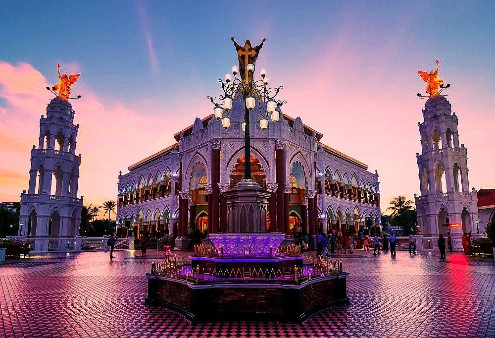
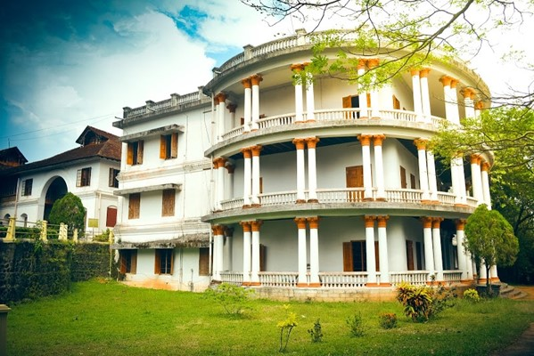
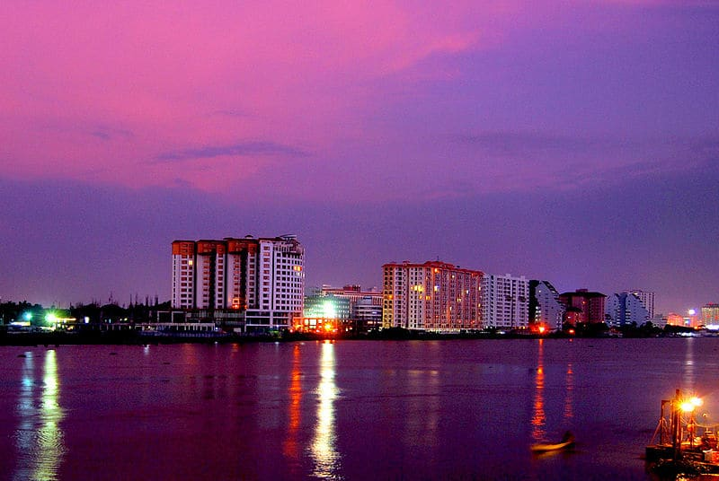
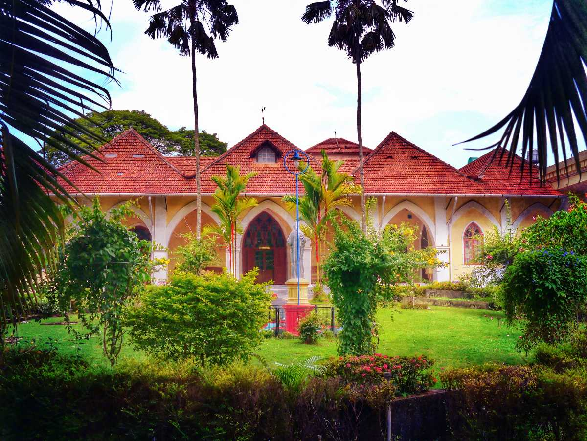
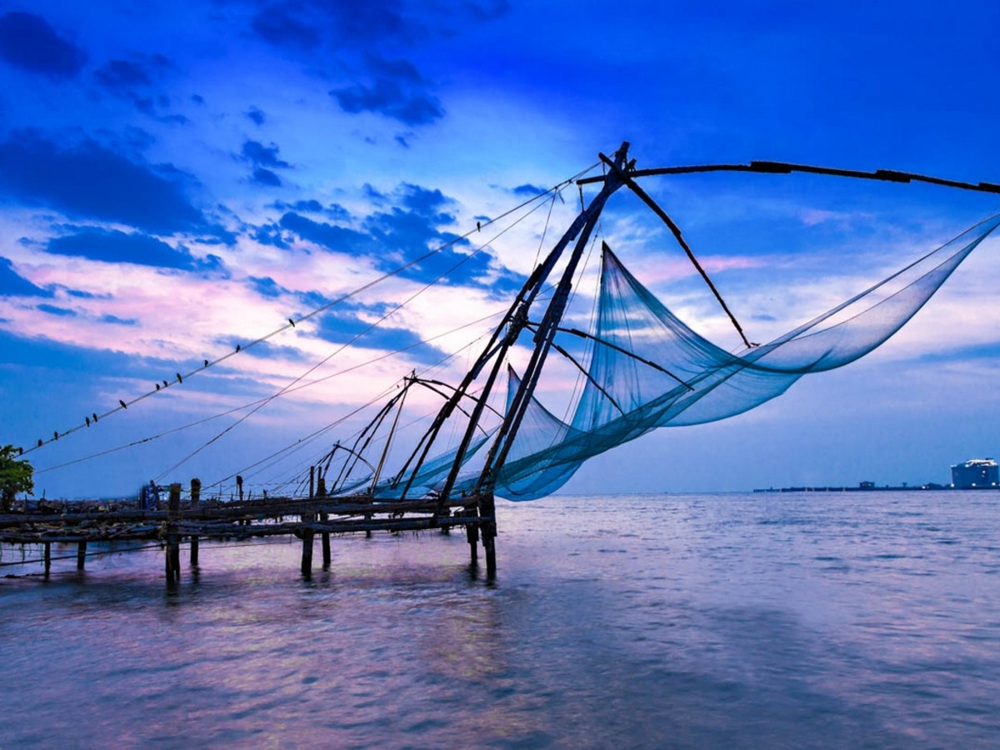
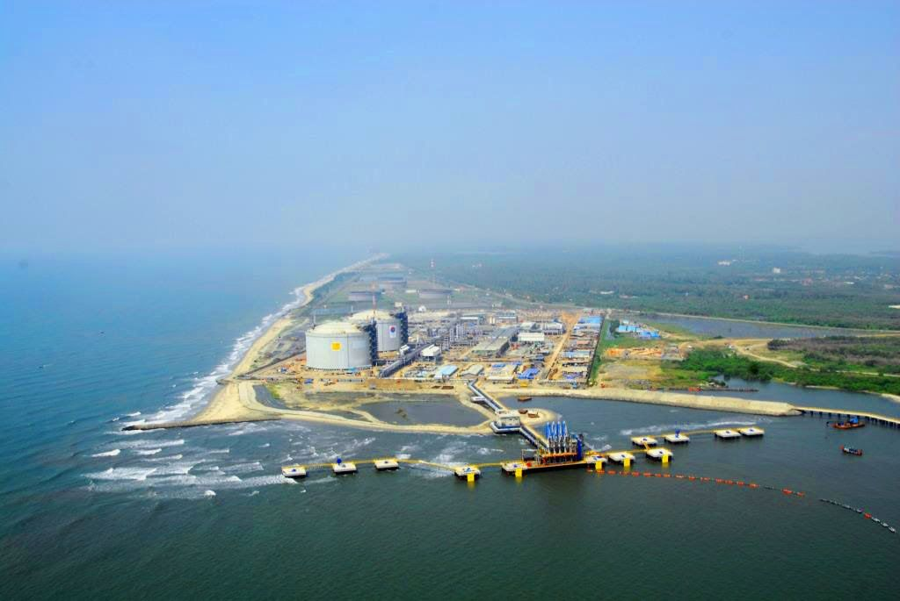

The church is thought to have been founded in 593 AD. It is regarded as one of the oldest churches in Kerala, after the seven churches founded by Thomas the Apostle in the first century AD.The church was originally dedicated to the Marth Mariam.In 1080, a new church was built adjacent to the old church.A nine-day festival is celebrated annually as part of the Feast of Saint George.The church,also a destination for non-Christians,attracts offerings of gold,chicken,and eggs.

Cherai Beach is a beach located in Cherai in the northern side of Vypin Island, a suburb of the city Kochi in the state of Kerala, India. One of the most visited beaches in the state, it is situated at around 25 km from downtown Kochi and 20 km from Cochin International Airport.

Hill Palace is an archaeological museum and palace located in the Tripunithura neighbourhood of Kochi city in the Indian state of Kerala. It is the largest archeological museum in the state and was the imperial administrative office and official residence of the Cochin Maharaja. Built in 1865,the palace complex consists of 49 buildings in the traditional architectural style, spreading across 54 acres. The complex has an archaeological museum,a heritage museum, a deer park, a pre-historic park and a children’s park.

Marine Drive

Indo Portuguese Museum

Willingdon Island
Cherai Beach

Vypeen Island
Hill Palace

Bolgatty Palace
Edappally Church Complex